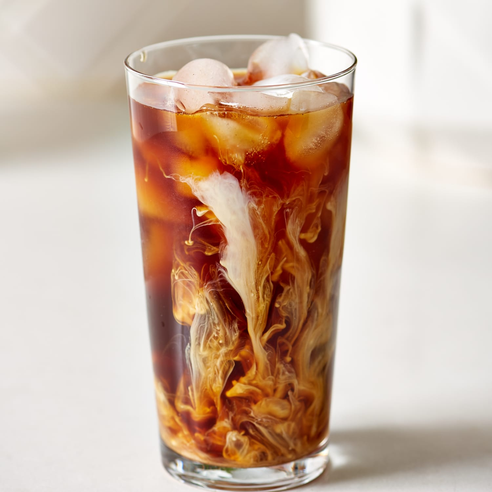

Cold Brew

This easy cold brew recipie is great for anybody who wants to have a nice cold coffe and stop a
starbucks addiction. And it's easily modifiable
- Cofee Grounds (of your choice)
- French Press
- Creamer or milk
- Some kind of sweetner *I enjoy caramel and vanilla
- put as much coffe grounds as you want for the week into the french press
- Then add double the amount of coffe grounds amount in water IE: 1 cup grounds two cups water
- Let sit at least over night or longer to soak up the water and bring out the flavor
- Strain grains
- Enjoy